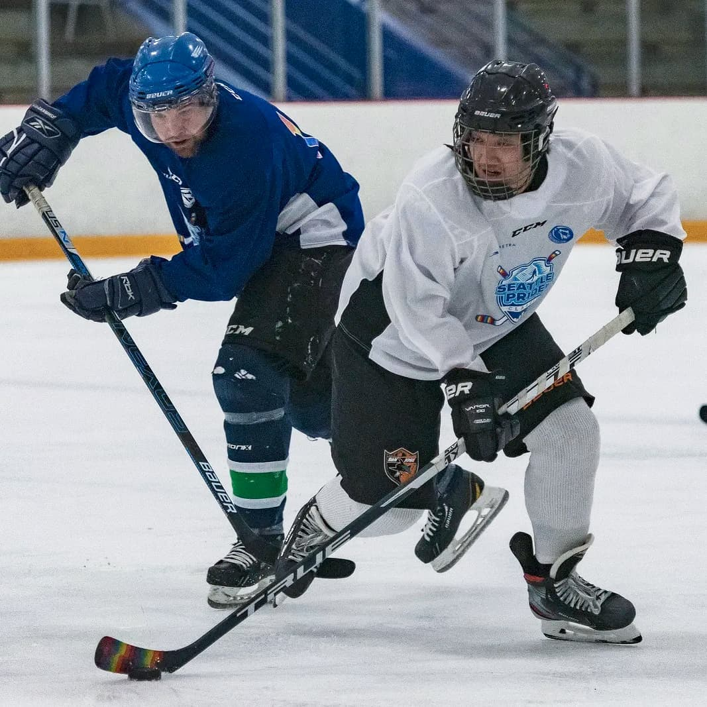

My name is Kelly Ros, and I currently live in Seattle, WA. I'm originally from San Jose, CA, and moved to Washington in 2018.
I graduated with a Bachelor's Degree in Electrical Engineering and a Minor in Mathematics at San Jose State University in 2016.
I have plenty hobbies and interests, including playing hockey (ice and inline), badminton, and coffee. I've also taken multiple classes at
the University of Washington while working as a full time engineer.

First Annual Seattle Pride Classic 2021 held at Olympic View Arena in Montlate Terrace, WA
Career
I am currently employeed by The Boeing Company as an Electrical Design and Analysis Engineer.
I have previously worked at Underwriter's Laboratories (also known as UL) and Energous Corporation.
I was a Radio Frequency Laboratory Engineer in both of these positions.
Coffee
I love coffee. I wouldn't say that it was my primary reason for moving to Seattle, but it was definitely one of the benefits of moving here!
I mostly make pourovers at home, using my Hario V60 or Chemex. I'll occasionally buy an espresso drink from one of the local shops in my area, but will also pick up a bag of whole beans while I'm there.
I'm currently drinking Golden Hour Blend roasted by James Coffee Co x Peter McKinnon located in San Diego, CA, but regularly buy beans from Ballard Coffee Works.